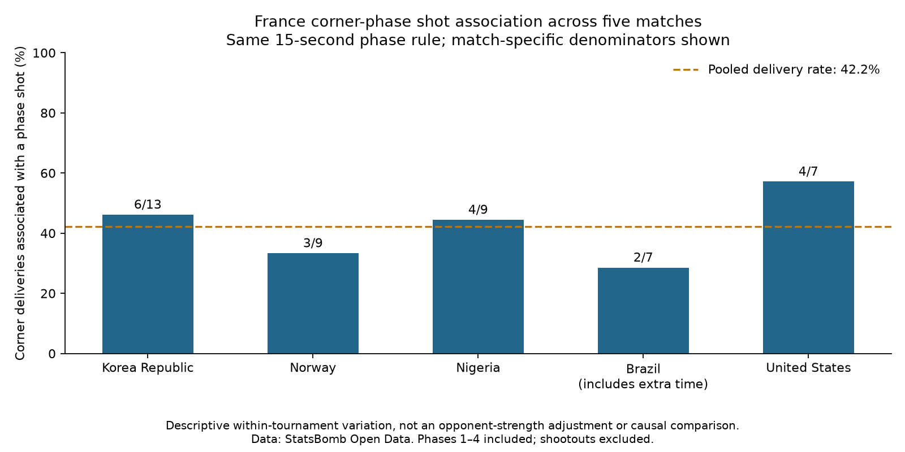

Football analyst training · Phase 2 · Lesson 38
Move from one match to a research sample.
We applied the same 15-second corner-phase rule to every France match in the tournament.
Completed assignment
Five matches, 45 deliveries, 19 corners associated with a shot: 42.2%. Those phases contained 21 shots and two goals, both against Korea Republic.

Pool counts, then calculate the rate
(6 + 3 + 4 + 2 + 4) / (13 + 9 + 9 + 7 + 7) = 19 / 45 = 42.2%
This weights each corner equally. Simply averaging the five percentages would weight each match equally, even though they contain different corner counts.
Keep comparisons honest
Brazil's seven deliveries include three in extra time. We count all deliveries, not per-minute rates. Only five matches are available, so a high match percentage does not prove strong set-piece skill or identify an easy opponent.
Run 38_france_tournament_corners.py in Spyder. pool() adds counts before division. This extension counts shots; it does not run or change an xG model.
The worked report is complete with assistance. Ask your teacher to explain any new step in more detail.